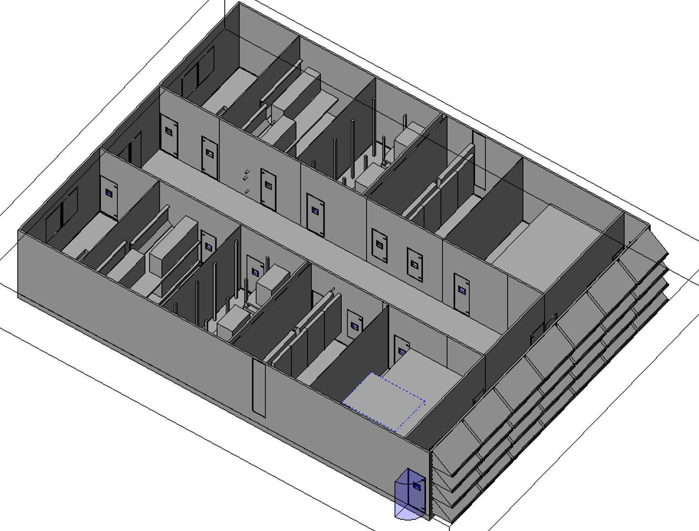
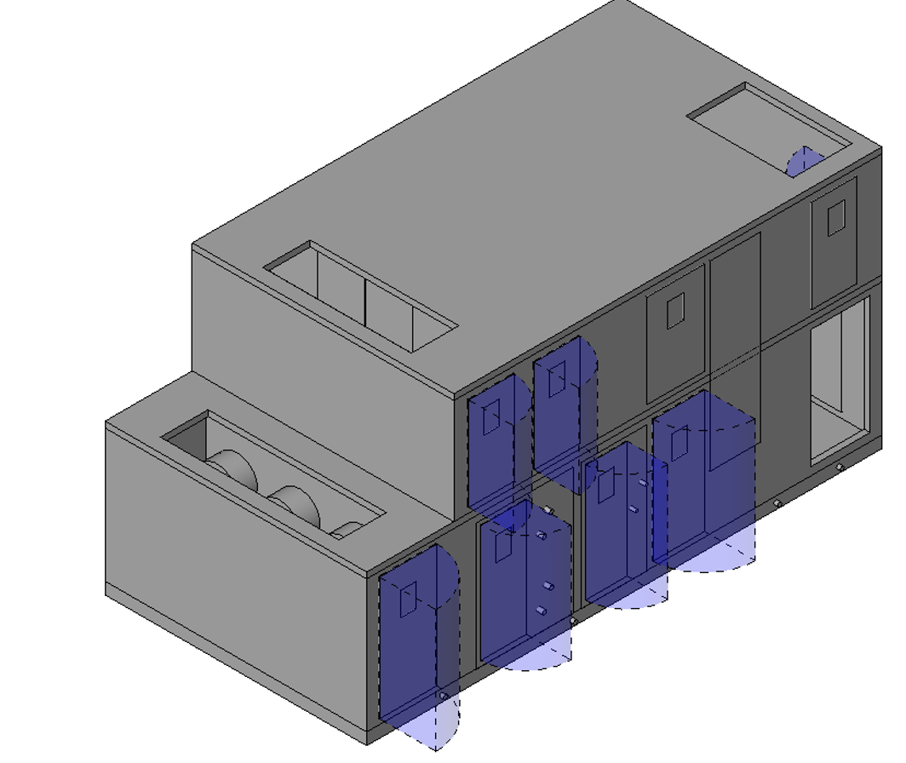
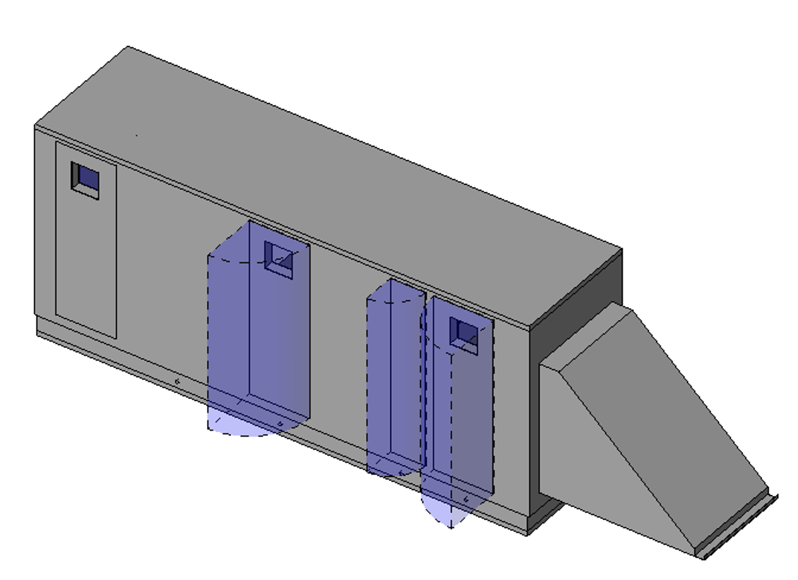

Revit · T.G. Gallagher co-op
At T.G. Gallagher we kept running into the same problem: air handlers showing up on site that didn't fit where we thought they would. The engineering submittals came in as 2D drawings with equipment schedules, so our team had to guess at the actual size and layout before we could check for conflicts with other systems. We were always playing catch-up — finding problems during installation instead of beforehand. My supervisor asked me to fix it by building accurate 3D models of the air handlers straight from the submittal drawings, so we could coordinate properly before equipment even got ordered.
The tricky part was that every manufacturer's submittal looked different. Some had great detail; others were pretty bare-bones. I dug through the PDF drawings to pull out what mattered: overall dimensions, duct connection locations and sizes, and the clearance space each unit needed. Then I used Revit's family editor to build 3D models matching the real equipment, including connection points for ducts, pipes, and electrical. When submittals didn't have enough information — which happened a lot — I'd look up manufacturer spec sheets or check with the mechanical engineers rather than guess. I also set up a naming and organization system for the families so other people on the team could actually find and use them later.

Once the models existed, we caught conflicts weeks earlier. Instead of discovering during installation that a unit would hit a beam or block access to something else, we found out while there was still time to do something about it. The subcontractors liked having accurate models too, because they could plan their work better. After that, this became the standard way we handled major equipment on future projects.

The whole thing taught me something I keep coming back to: turning engineering documents into usable 3D information is where BIM actually saves time and money. A model is only as useful as the data behind it.
